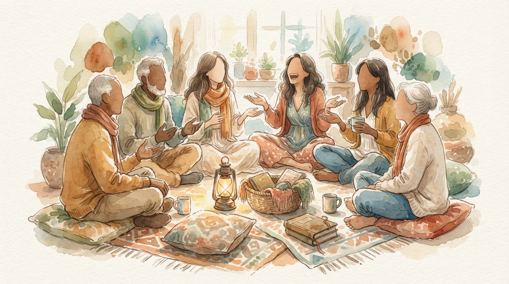
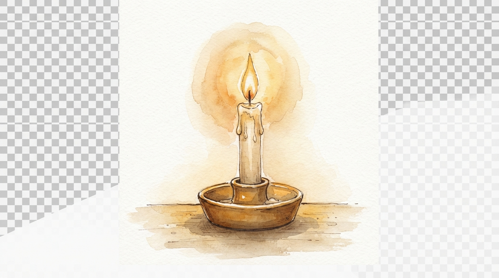

引導問題：
- 你曾經因為聽到一個好消息，而真心為別人感到高興嗎？請簡單分享那個時刻。
- 當你經歷了一件美好的事，你的第一個反應是藏起來，還是想告訴別人？為什麼？
💡 引言重點：伊利莎白年老生子，這不單是她個人的神蹟，更成為了整個社區的喜樂與話題。上帝的作為從個人延伸到群體，從家庭傳遍山地。

一、破冰引言 （10分鐘）引導問題：
💡 引言重點：伊利莎白年老生子，這不單是她個人的神蹟，更成為了整個社區的喜樂與話題。上帝的作為從個人延伸到群體，從家庭傳遍山地。
請組員輪流讀經文：路加福音 1:57-66

三、深入默想與討論 （30分鐘）問題1：為什麼上帝選擇讓伊利莎白懷孕這件事被鄰里親族「聽見」並「看見」？如果上帝只是暗中賜福給她，不也一樣是恩典嗎？
反思：上帝的恩典本身俱有見證的本質；我們的信心經歷，是否停留在「只有自己知道」的階段？
問題2：經文中鄰里親族「一同歡樂」，這份歡樂對伊利莎白和整個社區分別有什麼意義？
→ 對伊利莎白：喜樂被加倍；對社區：親眼看見上帝的大憐憫，信心被堅固。
應用提問：你曾否因聽見別人的見證，而自己的信心也被激勵？
問題3：第65節說「這一切的事就傳遍了猶太的山地」。這些事是透過什麼方式傳開的？在今天，這對我們有什麼啟發？
挑戰：我們的教會或小組的「好消息」，是否傳遍了我們的「猶太山地」——生活圈、職場、鄰舍？
問題4：為什麼有時我們不願意分享上帝在我們身上的工作？以下哪些是你的掙扎？
問題5：伊利莎白和撒迦利亞並沒有「到處宣講」，但事情仍然傳開了。這給我們什麼提醒？
→ 見證不一定是大聲宣講，而是生命真實的改變，自然會引起人的注意和談論。
🖊️ 默想與書寫（3-5分鐘）：
🗣️ 小組分享（10分鐘）：
每人用一句話分享「最近一次看見上帝在工作」，由帶領者開始，依次傳遞，形成一條「恩典之鏈」。結束時一起說：「主向我們大施憐憫，我們一同歡樂！」